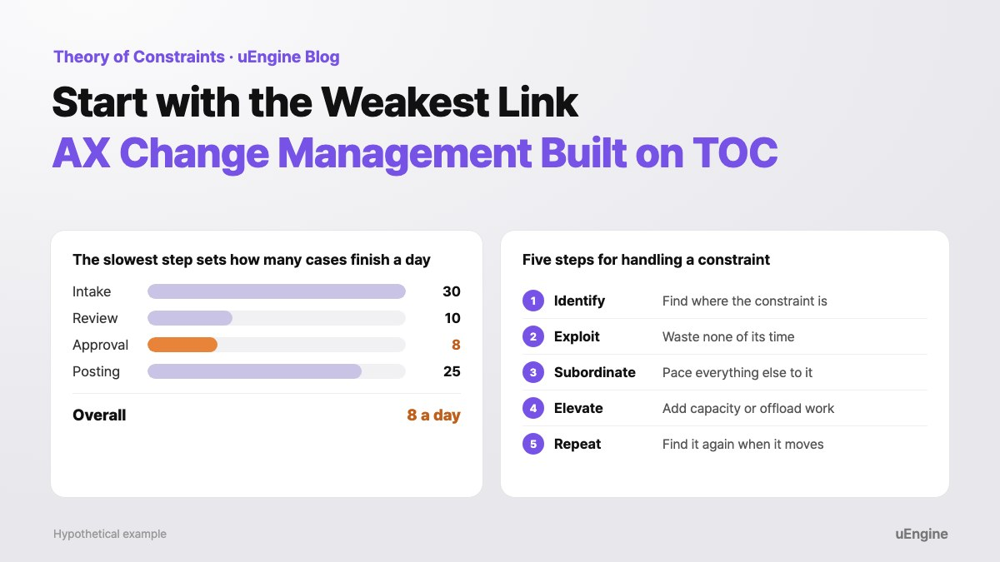

Start with the Weakest Link — AX Change Management Built on the Theory of Constraints

1. Training is done, so why has nothing changed?
Every employee has completed AI training. Summarizing documents, drafting emails and compiling reports have all become faster. Yet a quarter later, when you measure how long it takes to send a proposal to a customer, nothing has changed.
In the previous post, "Why AI Pilots Stall in Real Work", we traced the reason through the handling of a single invoice. AI cut a 20-minute task to 3 seconds, yet the time to finish one invoice only dropped from 1 day 40 min to 1 day 20 min. The rest was handoffs and waiting for approval.
A theory described this phenomenon 40 years ago: the theory of constraints. This post explains what it is, and why AX transformation has to start with diagnosis rather than training, and end with change management.
2. The theory of constraints: a chain is only as strong as its weakest link
The theory of constraints (TOC) is the idea that Israeli physicist Eliyahu Goldratt popularized in his 1984 business novel The Goal. Its core is this: the overall speed of work made up of several steps is set by the slowest single step, the constraint.
Take work made up of four steps. Each step can handle a different number of cases a day.
| Daily capacity | Intake | Review | Approval | Posting | Cases finished per day |
|---|---|---|---|---|---|
| Today | 30 | 10 | 8 | 25 | 8 |
| AI added to intake | 60 | 10 | 8 | 25 | 8 |
| Approval raised to 12 | 30 | 10 | 12 | 25 | 10 |
Hypothetical numbers for illustration. Orange marks the constraint in each case.
Bring AI into intake and double its capacity, and the number of cases finished per day stays at 8. The extra 22 just pile up in front of approval. Raise approval from 8 to 12 instead, and overall throughput rises to 10, and now review becomes the new constraint.
Goldratt put it this way: "An hour lost at a bottleneck is an hour lost for the entire system. An hour saved at a non-bottleneck is just a mirage."
Before asking where to use AI, ask first: "Where is our work stuck right now?"
3. In office work, the constraint usually lies in waiting
In a factory, the constraint is a machine, so you can see it. In office work, you cannot, because work piles up not in a warehouse but in someone's inbox and approval queue.
Take the example in Chapter 22 of the Process GPT Lite tutorial: the "Dalbit Coffee proposal" process, which produces store proposals and quotes for coffee franchisees and handled 48 cases over three months. Analyzing the records gives the following.
- Lead time per case: 3.2 days on average
- Time people and agents actually worked: 2.8 hours
- Flow efficiency (time worked ÷ lead time): 3.7%
- Constraint: a single finance reviewer. With 0.9 cases arriving a day and capacity for 1.0, utilization is 88%, and 82% of the lead time is spent waiting in front of this step.
As utilization approaches 100%, waiting time does not grow at a steady rate; it shoots up. According to queueing theory, waiting time is roughly proportional to utilization ÷ (1 − utilization). Taking 50% utilization as 1, it is 4 times at 80%, 7 times at 88% and 19 times at 95%. That is why a little more work can multiply the wait several times over.
4. Five steps for handling a constraint
The theory of constraints sets out five steps for handling a constraint. Applied to the same example, they look like this. The effects are values the tutorial calculated before applying each change.
| Stage | Meaning | In the "Dalbit Coffee proposal" |
|---|---|---|
| 1. Identify | Find where the constraint is | Finance review. Utilization 88%; 82% of the lead time is waiting in front of this step |
| 2. Exploit | Waste not a moment of the constraint's time | An agent first prepares a review draft that checks calculations and unit prices, and the reviewer only confirms it: 3.2 days → 1.9 days Reduce requests for missing information so nothing has to be reviewed twice: 3.2 days → 2.6 days |
| 3. Subordinate | Pace the other steps to the constraint | Cap the queue in front of finance review at 2 cases; when it is full, earlier steps start the most urgent cases first |
| 4. Elevate | Increase the constraint's capacity or take work off it | Quotes under KRW 40 million skip finance review: 3.2 days → 1.6 days Add one more finance reviewer: 3.2 days → 1.9 days |
| 5. Repeat | When the constraint moves, go back to step 1 | Even with the most effective change, the constraint is still finance review (utilization 63%). After each change, find the constraint again |
Values calculated from the example data (48 cases) in Chapter 22 of the Process GPT Lite tutorial.
The table holds three lessons for AX transformation.
- AI pays off only when applied to the constraint. In the same example, automating floor-plan drafting, which is not the constraint, cuts lead time only a little. However fast the floor plan is done, the proposal still waits in front of finance review.
- Exploit before you add people. Letting the current reviewer focus only on confirming is cheaper and faster than hiring more people. Having an agent prepare a draft first does exactly that.
- The biggest effect came from changing a rule. "Quotes under KRW 40 million skip finance review" is a company policy, not a technology. The evidence is in the records: of the last 48 cases, 29% were under KRW 40 million, and their rate of requests for missing information was 7%, far lower than for cases at or above the threshold (18%).
5. That is why change management is needed
The third lesson is the heart of this post. The fixes the theory of constraints uncovers usually call for changes in ways of working and rules more than in technology.
- Changing a rule takes agreement. To change the finance review threshold, the finance owner and the sales team have to agree on the risk and responsibility they will take on.
- Subordination feels strange. When earlier steps deliberately pace themselves, people ask, "Why aren't you working?" Everyone needs to understand that rushing ahead only means waiting in front of the constraint.
- Roles change. People who used to write drafts themselves become "agent bosses" who give agents goals and completion criteria and approve the results.
- The constraint moves. It is not enough to fix it once; the habit of measuring and finding the constraint again has to stay in the organization.
Training teaches people how to use the tools, but it cannot create these changes on its own. That is why change management should not be an event tacked on after training, but a single program that runs from diagnosis to measurement.
6. Turning the five steps into a program: the AX Transformation Program
uEngine's AX Transformation Program follows the same order as the five steps of the theory of constraints, organized into seven steps that fit a company's schedule and roles. Click a step name to see its main activities, participants and deliverables.
| Theory of constraints | AX Transformation Program | Output |
|---|---|---|
| 1. Identify | 1 Upfront diagnosis · 2 Finding bottlenecks | Value stream map, prioritized list of bottlenecks |
| 2. Exploit | 3 Agents · 4 Automation | Agent candidates with test results, automation backlog |
| 3. Subordinate · 4. Elevate | 5 Process innovation | To-be process, roles and responsibilities (RACI) |
| Making change stick | 6 Training | Training plans for executives, team leads, practitioners and AX champions |
| 5. Repeat | 7 Change management | Quarterly KPI review (lead time, throughput, rework) and priorities for the next quarter |
In the change management step, we pilot on a single bottleneck, measure before and after, and once the effect is confirmed, expand to the next bottleneck and to other teams. This cycle continues through monthly mentoring sessions, AX champions in each department, internal sharing of results and skills, and quarterly KPI reviews. These are the mechanisms that turn the fifth step, repeat, into an organizational habit.
Measurement takes tools. The Process GPT Lite "Improve" screen uses execution records to show the bottleneck, the value stream and constraint, and the critical path with improvements calculated in advance. Process GPT's lead-time breakdown splits total elapsed time into human judgment, agent work and waiting. Every number in this post comes from records like these.
7. Closing: start with the weakest link
Many companies see AI adoption fail to deliver results. Usually it is not that the AI falls short, but that it was applied somewhere other than the constraint. Put diagnosis before training, fix the weakest link first, and expand as you measure. Change management is the work of helping people accept the new rules and roles that come with that process.
If you want to find your company's weakest link together, take a look at the AX Transformation Program. The Agent Storming Workshop for dividing work between people and agents, AI Work Class for Your Company for practitioners, and AX Transformation Consulting Training for executives connect to it step by step. For a consultation, reach out through Contact Us.
References
- Theory of constraints — Wikipedia
- The Goal (Eliyahu M. Goldratt, 1984) — Wikipedia
- Process GPT Lite tutorial, Chapter 21 · Find the bottleneck
- Process GPT Lite tutorial, Chapter 22 · Value stream and the theory of constraints
- Process GPT Lite tutorial, Chapter 23 · Critical path and running improvements
- Why AI Pilots Stall in Real Work — and Why the Process GPT Approach Matters